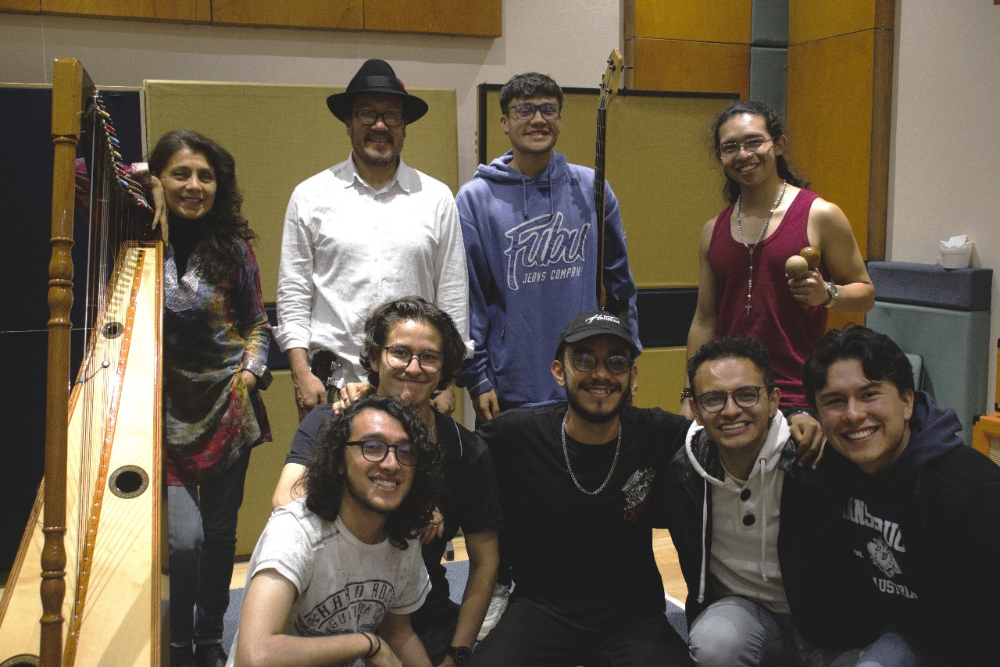
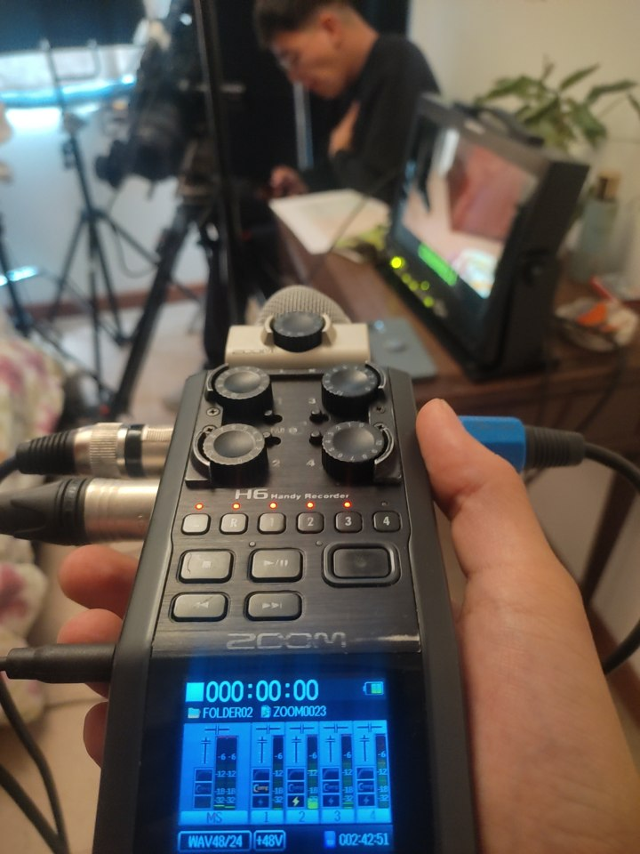
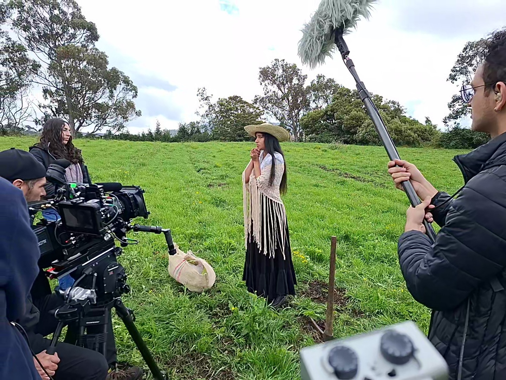
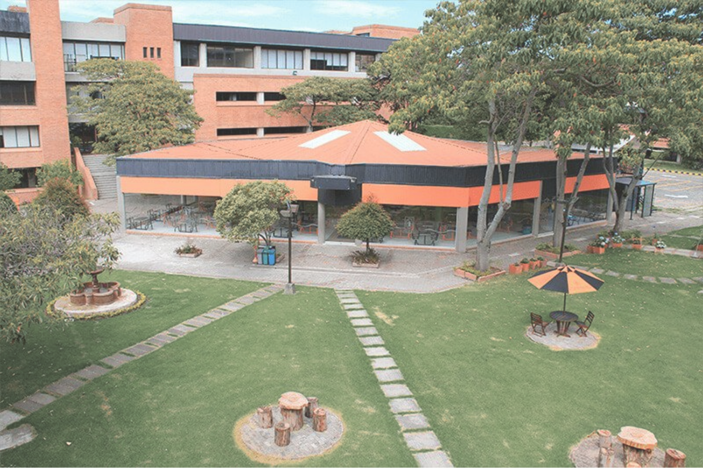
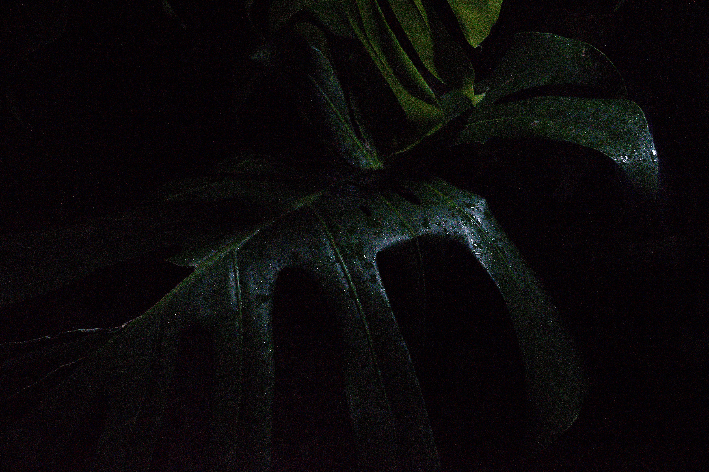
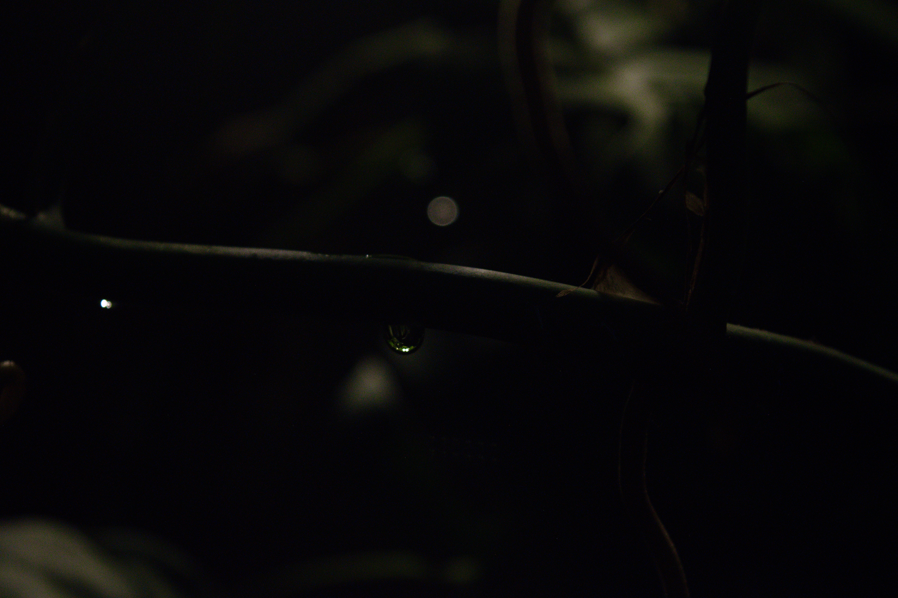
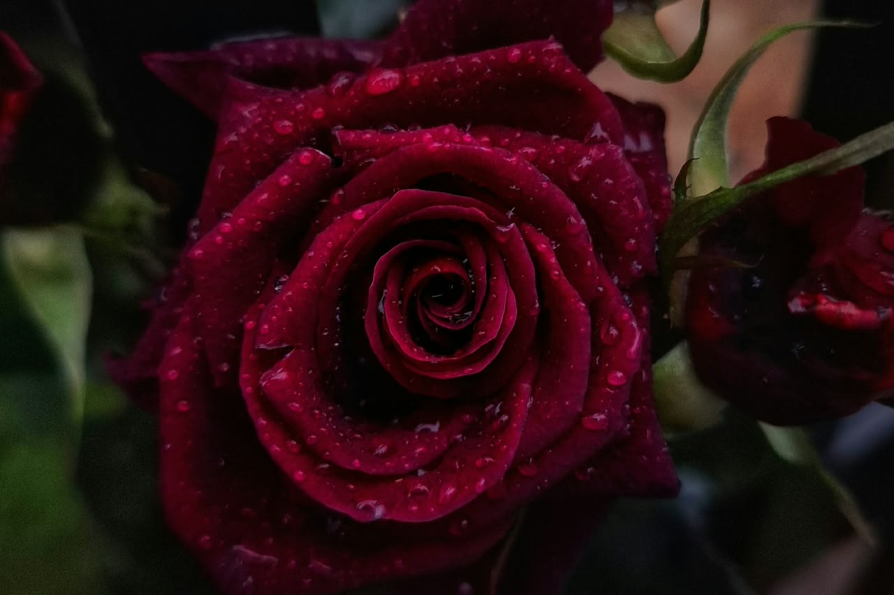
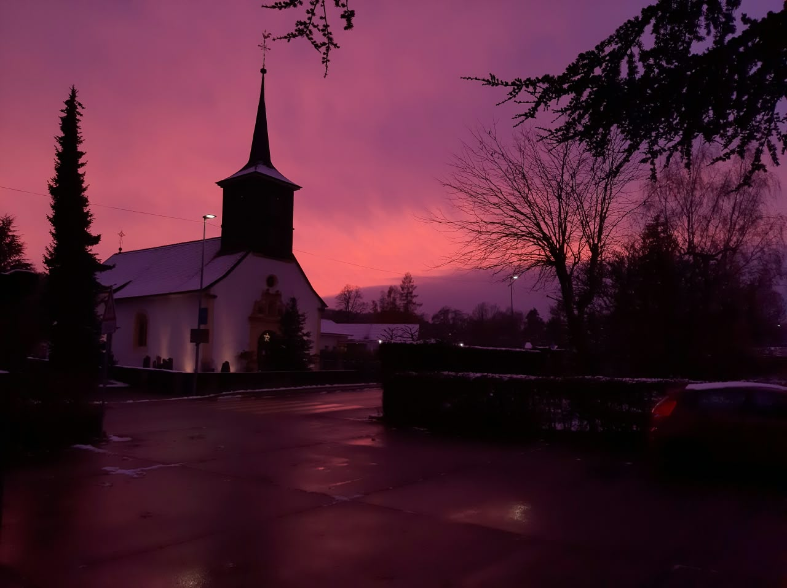
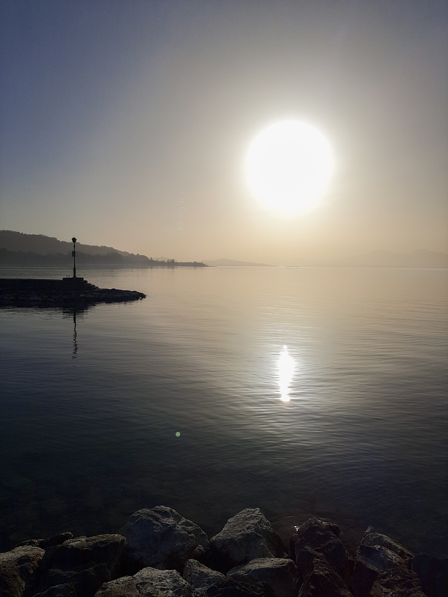

Ingeniería de Sonido //
Acústica & Imagen


Ingeniero de Sonido con enfoque en acústica, producción audiovisual y fotografía. Mi trabajo fusiona la precisión técnica con la sensibilidad estética, abarcando desde el diseño acústico y el procesamiento de señales hasta el sonido en directo, la cinematografía y la creación visual.
Audio / AV
Registro en Vivo / FOH
Mezcla y refuerzo sonoro en escenario principal
Fragmento (Bonds of Hope)

Sesión de Grabación
Configuración de microfonía y ruteo de señales en sala principal



Sonido Directo y Foley
Registro en set y postproducción de audio para cortometrajes
Acústica





Fotografía






